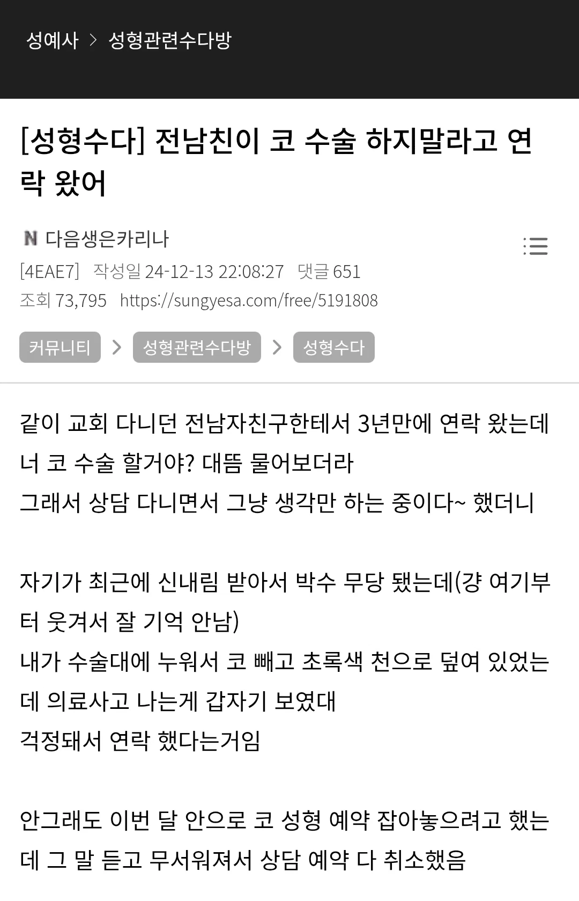

전남친이 코수술하지말라고 연락왔어
댓글
커뮤글만보고 여자가어떠니 경제가어떠니 지랄하는새끼들이 뭔 ㅋㅋ
저기 어디로 가면 알 수 있는 무당집일까
겹치는 어딘가에서 줏어듣고 예뻐질까봐 멕인거 아닐까
여자썰에 무당 신내림 굿 이런거 들어가면 걍 100퍼 주작 소설이니 적당히 보고 지나가면 된다 괴담 유튜브 절반이 이런거 받아주다 조회수빠지는중
전남친 : 너 내일 모텔갈꺼야? 휴모텔 201호 침대가 들썩들썩 거리는게 보여
교회 다니다가 신내림 받고 무당됨
전남친이 수술하지마라고 연락옴
예~전에 거의 10년 좀 더 전에 알고지내던애가 무당 했었는데
그 때 같이 지내는 애들 한테 뭐 걱정된다 하는거 다 막 주저리 주저리 말해줬는데
완전 딱 맞는것도 있었고 어느정도는 끼워맞는것도 있었고 어찌저찌 뭐 다들 취업하고 결혼하고 하면서 흩어지고
무당된 걔도 딱 모임 두번째 결혼식 참석 이후로 연락은 안되는데
가끔 애들끼리 이야기 하다보면 걔가 한 말 다 맞지 않았냐 뭐 이러긴 함
구글계정 공유되어있던거라면..!